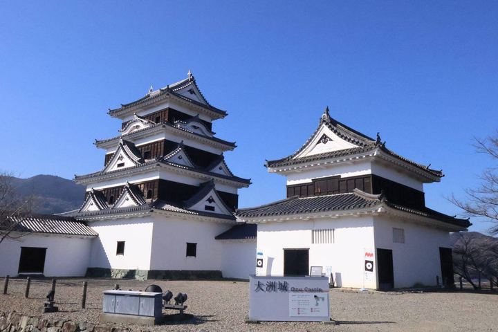
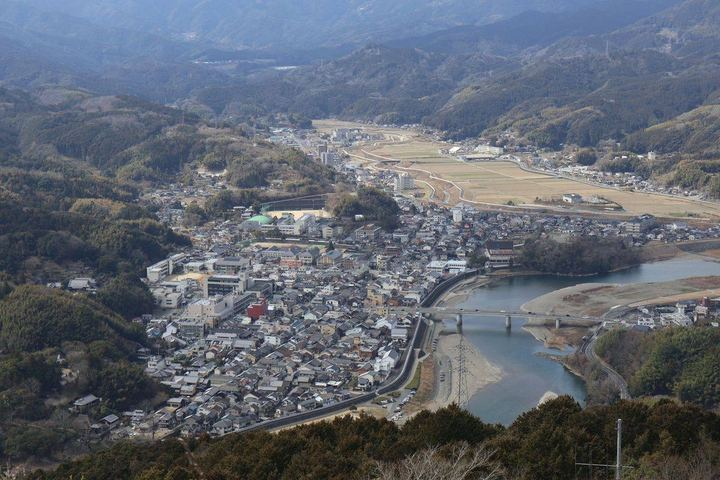
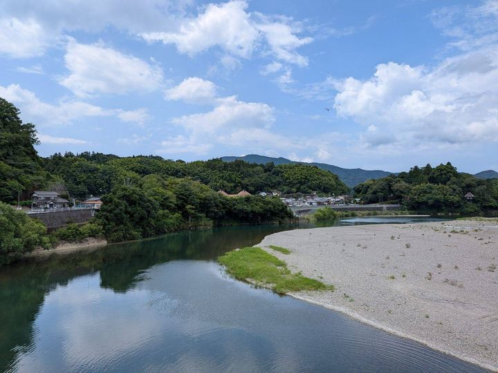
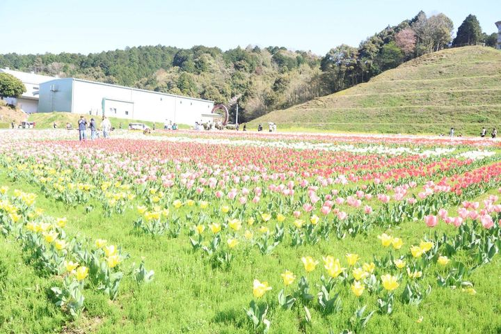
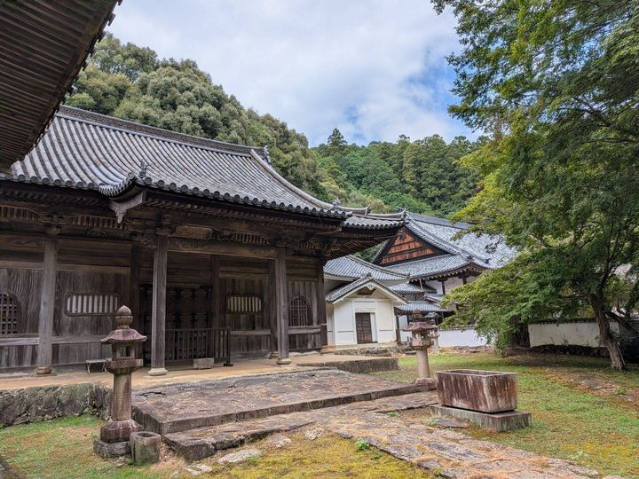
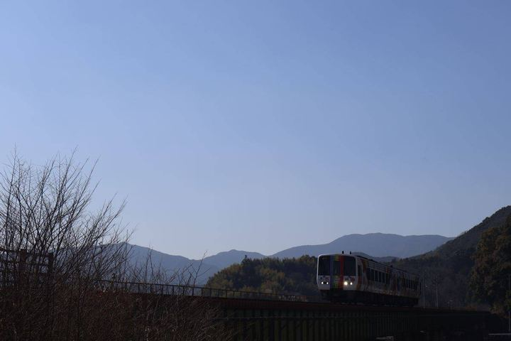
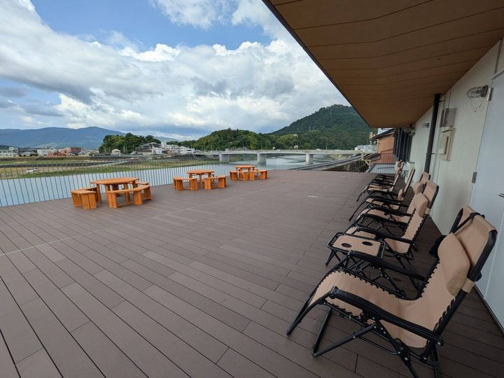
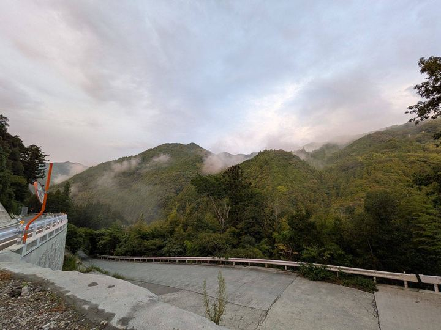

大洲市の非公式生活情報サイト。 市役所や議会の硬い資料、SNSの断片的な話題を、1人の市民の目線で読み解いています。
運営者のおすすめ記事10選を見る
掲載日ではなく、参照した資料そのものの日付が新しい順に並べています。
記事の一覧をすべて見る
1本の記事に収めるにはもったいない題材を、時間のあるときにじっくり読んでもらうための長文コーナーです。 出典を並べて、分からなかったことも正直に書いています。
「大洲の自由研究」の一覧を見る
全129記事につけたテーマタグです。かっこ内は記事数。
記事で使っている写真は、すべて市内で自分で撮ったものです。自由に使える形で公開しています。








フリー写真のページを見る